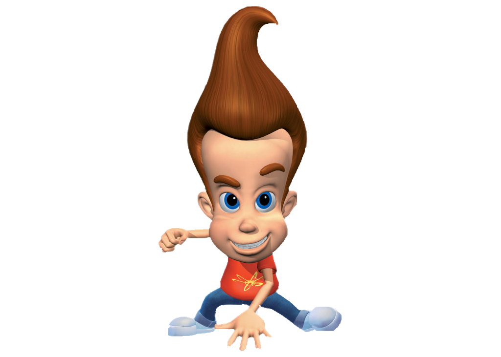

Джимми - 11 летний мальчик-гений. У него светлая кожа, непропорционально большой лоб, голубые глаза и каштановые волосы в завитке. Его часто дразнят, потому что он ниже большинства мальчиков своего возраста, хотя иногда кажется, что он такого же роста, как и его друзья. Гардероб Джимми состоит почти исключительно из красных футболок, на которых изображен его фирменный символ-желтый атом.
Джимми - очень умный ребенок, с невероятным Iq 210. Во многих эпизодах его одноклассники злятся, потому что он такой умный и продолжает превосходить их во всем, что связано с математикой и наукой. Этот мозг, источник постоянных комментариев, позволяет ему изобретать устройства, которые достигают даже невозможного. Это обычно приводит Джимми к случайным неприятностям в Ретровилле. Он разрабатывает свои дикие изобретения, чтобы помочь ему справиться с надоедливой работой по дому, но они часто заканчиваются тем, что вызывают большую проблему. Однако они вовлекают его в захватывающие приключения и делают жизнь интереснее.